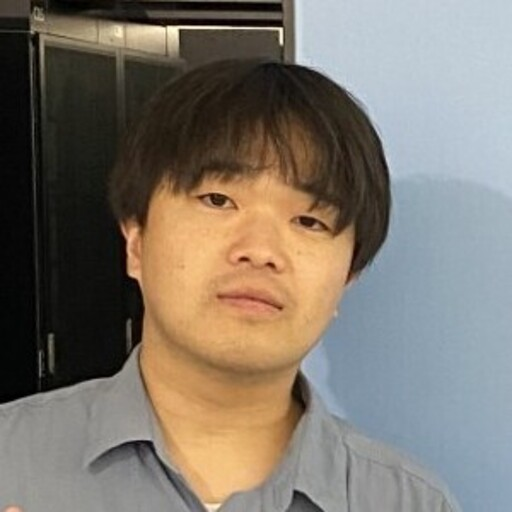

2026
Physics-inspired transformer quantum states via latent imaginary-time evolution
Physical Review Research 8(3)

量子多体系・強相関電子系を主な対象として、機械学習を用いた量子状態の表現・計算手法を研究しています。
KEYWORDS

Physical Review Research 8(3)
ACM Transactions on AI for Science (accepted)
Physical Review Research 2(3)
大学院医学研究科 人間健康科学系専攻 民間等共同研究員
富士通研究所 人工知能研究所 研究員
DC・クラウドサービス事業本部 システムエンジニア
大学院情報科学研究科 情報システム工学専攻 博士後期課程
大学院理学研究科 物理学専攻 博士前期課程
理学部 物理学科